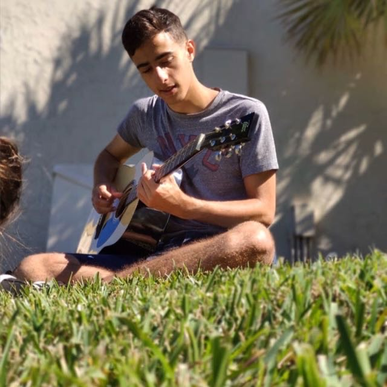

{% extends 'index/index.html' %}
{% block background_block %}
{% endblock background_block %}
{% block 'header_block' %}

Franco Calvella - Autor
Me llamo Franco Calvella. Tengo 21 años y soy de Temperley, Buenos Aires. Soy estudiante de comunicación en UBA y un apasionado por la tecnología. Recientemente pude terminar el curso de Python en Coderhouse para crear esta página. Pude aprender por mi cuenta HTML, CSS y JavaScript, decidiendo profundizar este último en UTN. Deseo seguir formándome en estos lenguajes de programación y descubrir hasta donde puedo llegar.
{% endblock 'header_block' %}